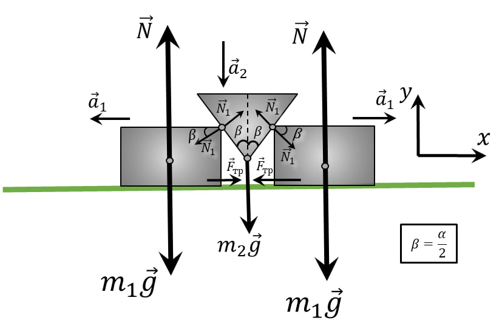
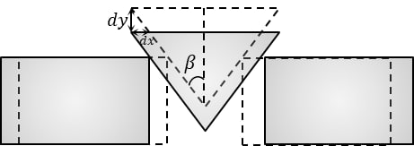

Условие:
\(2.1.48.\) Между двумя одинаковыми гладкими брусками массы $m_1$ каждый вставлен клин массы $m_2$ с углом $α$. Определите ускорение тел.

Решение:

Рассмотрим малое смещение за время $dt$ с точки зрения кинематики:

Из геометрических соображений:
$a_1 = a_2 \cdot tg\,\beta\;(1)$
Далее, запишем 2 закон Ньютона для бруска $m_1$ на ось $OY$:
$N_1=\frac{m_1a_1}{cos\,\beta}\;(a)$
Примечание. Попробуйте объяснить парадокс:
Опишем движение центра масс системы на ось $OY$:
$a_y=g\frac{m_2}{2m_1+m_2}$
$a_2=g\frac{m_2 \,tg\,\beta}{2m_1+m_2}$